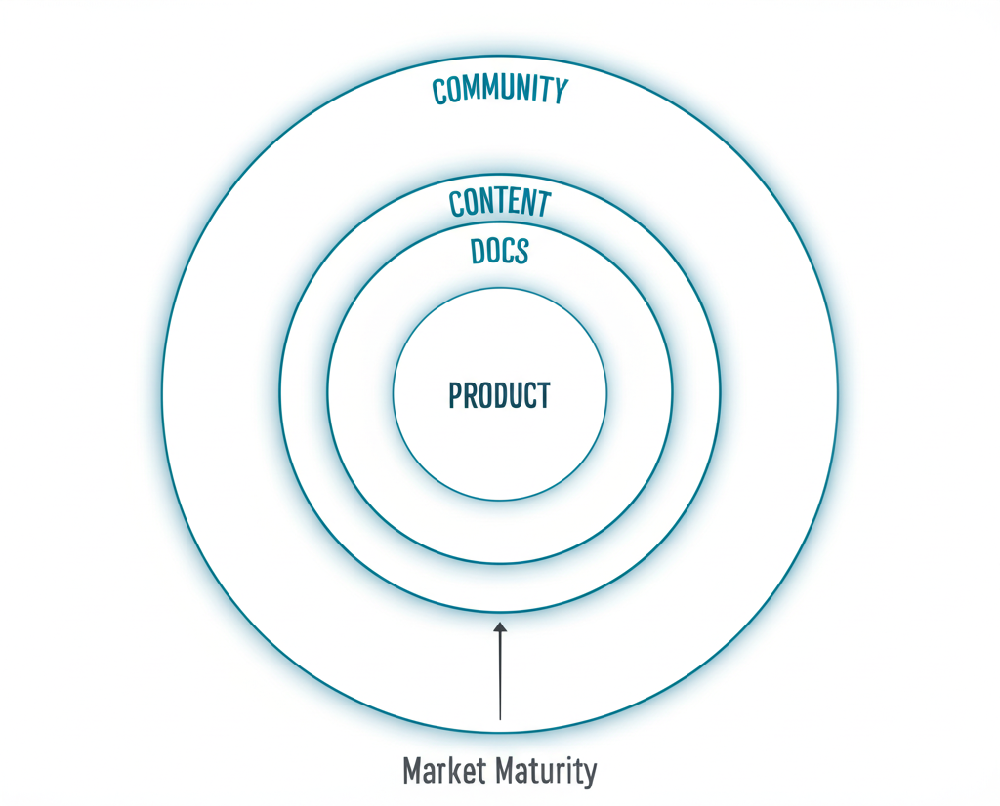
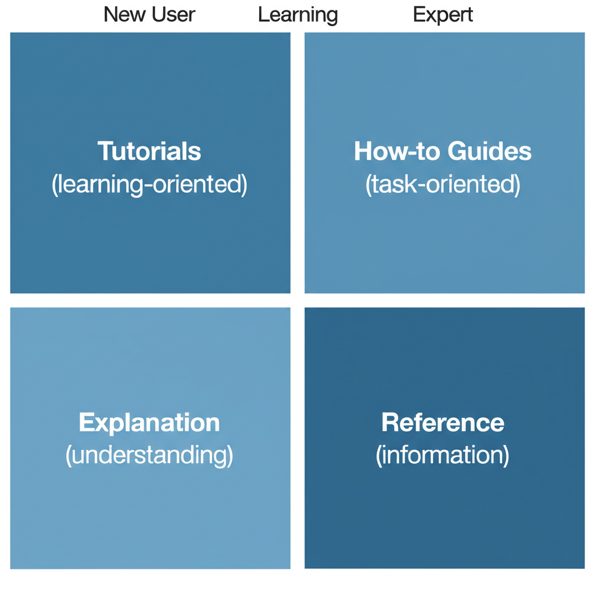

Part 1: Docs Philosophy
Why Docs Matter More Than You Think
Docs are not just support content. They are:
- Middle-of-funnel marketing
- A key differentiator
- Often the first real product experience
- A growth lever
"If a developer can pick software that is also open source, it's just better." — But even without open source, great docs = transparency.
The Radiating Circles of Developer Experience
Product → Docs → Content → Community
The further you go through product adoption and market maturity, the more "outside" you need to go to deliver value.
Docs are the second circle. Get them right before investing heavily in content and community.
Part 2: Docs Fundamentals (From Ex-Stripe Head of Docs)
First Impressions Matter
What developers see first:
- Whitespace signals approachability
- Diagrams signal thoroughness
- Code signals practical value
Make it inviting. Show you understand developers.
The Docs MVP
Before anything else, nail this:
The first quickstart experience where a developer:
- Understands what the product is
- Accomplishes something
- All in one 15-30 minute sitting
Don't think about other docs until this works.
Align Docs with Developer Stages
After the quickstart, structure around developer journey:
- Getting started
- Design
- Build
- Deploy
- Manage
This helps developers find what they need based on where they are.
Part 3: Making Docs Convert
The Signup CTA in Docs Header
Stripe added "Create Account" to their docs header.
Results: Significant conversion impact.
Apollo GraphQL: 20% signup increase from adding signup CTA to docs.
Lesson: Docs visitors are often non-users evaluating your product. Give them an easy path to signup.
Escape Hatches
People land on wrong pages. Example: "Stripe checkout" search can land on dev-focused or no-code page.
Solution: Put a link at the top to redirect to the right page.
"Looking for [other thing]? Go here."
Navigation That Works
Key principles:
- Self-hosted deployment in docs dropdown
- Quickstart prominently accessible
- Integration docs findable
- Search that actually works
Part 4: User Research for Docs
The Most Impactful Research
Method: Get a developer to complete a scenario. Ask them to "think out loud" as they normally would.
This uncovers:
- Where they get stuck
- What language they use
- What they expect vs what they find
- Hidden pain points
The Internal Test
Quick version: Ask your company devs to review a doc.
Questions:
- "What are your takeaways?"
- "What would you do next?"
- "What's confusing?"
See if takeaways align with the doc's goal.
Look at Search Results
What people search for reveals:
- Language they use
- Features they want
- Where they're stuck
Many search in Google for "X {BRAND}" or "X {BRAND} docs" — treat these like internal searches.
Part 5: Docs for AI/LLM Era
Writing for LLMs
As AI assistants reference docs, structure for machine readability:
- Clear headings
- Explicit code examples
- Structured data formats
- llms.txt files
Solving AI Engines vs Docs
From Clerk: As AI assistants become common, ensure your docs are:
- Easily parseable
- Semantically structured
- Updated frequently
- Machine-accessible
Part 6: Measuring Docs
Key Metrics
North Star: Time to first [X]
- Time to first API call
- Time to first dashboard created
- Time to first integration
Quality indicator: Customer satisfaction on doc pages
- 60%+ is good
- Track per-page ratings
- Monitor trends
Search Analytics
What to track:
- Most common searches
- Zero-result searches
- Search → bounce sequences
Use this to:
- Add missing content
- Fix language mismatches
- Improve navigation
Part 7: Docs Content Types
The Quickstart
Purpose: First success in 15-30 minutes
Structure:
- What you'll build
- Prerequisites
- Step-by-step instructions
- Working result
- What's next
Tips:
- Copy-paste ready code
- Minimal prerequisites
- Clear success criteria
- Path to deeper docs
Integration Guides
Purpose: Show how you work with their stack
Structure:
- What this integration enables
- Prerequisites
- Setup steps
- Configuration
- Testing
- Troubleshooting
API Reference
Purpose: Complete technical reference
Best practices:
- Consistent format
- Clear request/response examples
- Authentication explained first
- Error codes documented
Conceptual Guides
Purpose: Explain the "why" and "how"
When needed:
- Complex architectures
- New paradigms
- Design decisions
- Best practices
Part 8: Visual Elements in Docs
Architecture Diagrams
Why they work:
- Increase visibility in Slack and dark social
- Shareable
- Show you understand the ecosystem
- Help architects sell internally
Code Snippets
Best practices:
- Syntax highlighted
- Copy button
- Language selector
- Real, working examples
Screenshots and GIFs
When to use:
- UI instructions
- Visual feedback confirmation
- Complex sequences
Tips:
- Keep updated (outdated screenshots hurt trust)
- Annotate when needed
- Consider screen recording for complex flows
Part 9: Doc CTAs
Blog Post CTAs in Docs
The V7 approach:
- CTAs that don't feel "obviously an ad"
- Not too subtle to miss
- Contextually relevant
Where to Place CTAs
- Header: Signup/trial
- End of articles: Related content, deeper features
- Contextual: When discussing features that require upgrade
- Sidebar: Persistent but non-intrusive
CTA Copy That Works
Do:
- "Start building"
- "Try it free"
- "See it in action"
Don't:
- "Buy now"
- "Contact sales"
- "Request demo" (for early docs)
Part 10: Docs Infrastructure
Search
Must haves:
- Fast results
- Good ranking
- Search suggestions
- Zero-result handling
Navigation
Patterns that work:
- Persistent sidebar
- Breadcrumbs
- Version selector
- Language/framework switcher
Feedback Loops
- Per-page ratings
- "Was this helpful?"
- Edit on GitHub
- Feedback forms
Resources & Further Reading
Masterclass
- Docs Masterclass with Ex-Stripe Head of Docs (Video) — Dave Nunez
- Same Episode on Apple Podcasts
- Same Episode on Spotify
Conversion Optimization
- Adding Signup CTAs to Docs — Dave Nunez
- How "Create Account" CTA in Docs Header Pushed Conversions for Stripe